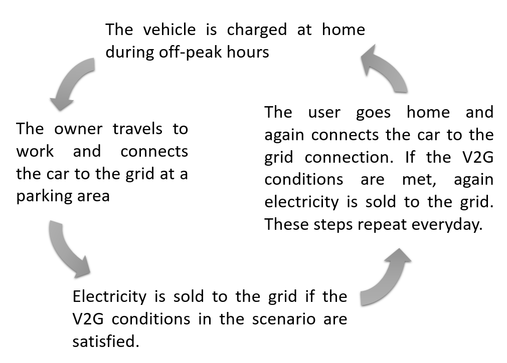
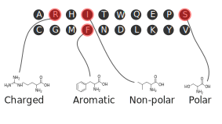
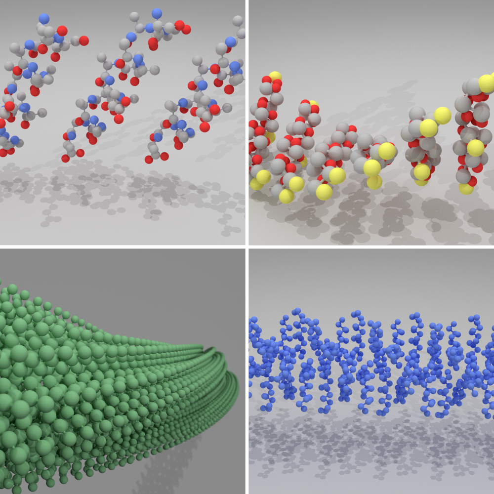
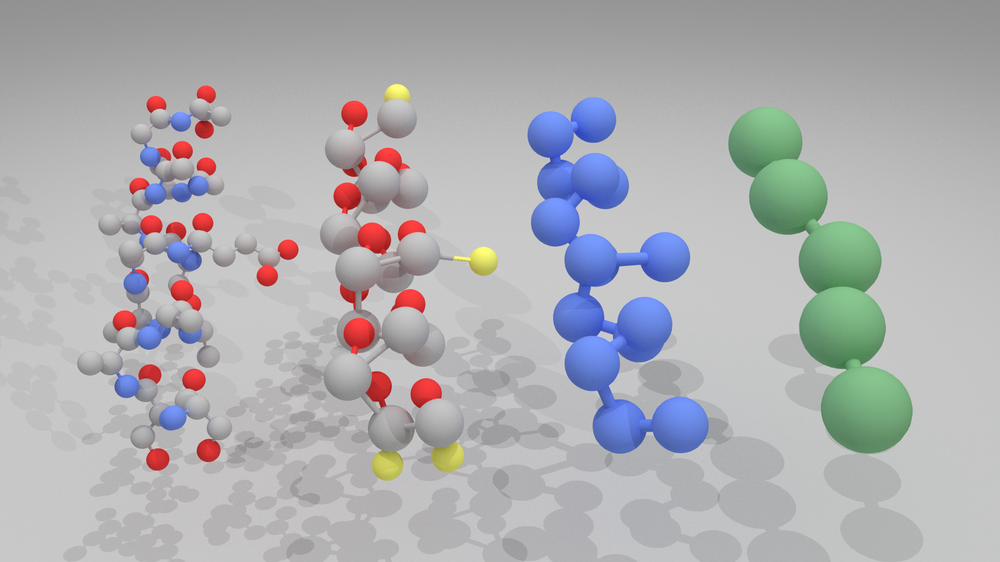
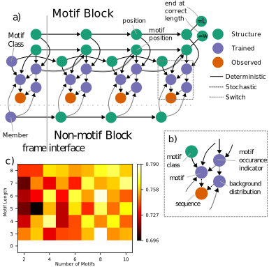

Can Parked Cars and Carbon Taxes Create a Profit?
The Economics of Vehicle-to-Grid Energy Storage
for Peak Reduction
Heta Gandhi
ACS, New Orleans
March 19th, 2018
Concept of Vehicle-to-Grid (V2G)
 The modeled system are monolayer peptide coatings and self-assembly.
Peptides are chains of connected monomers chosen from a set of 20 amino acids

Peptide Example:
Specific sequences exist for:
- Antimicrobials$^1$
- Protein binding (drug molecules) $^2$
- Nucleating crystal structures $^3$
- Binding to specific metals$^4$
- Resisting protein adsorption$^5$
- Anchoring mammalian cells on a substrate$^5$
- Self-assembling into a monolayer$^5$
- Disease model for Alzheimers$^3$
- White AD, et al. J. Chem. Inf. Model. 2013 53:493-499
- Fosgerau K and Hoffman T Drug Disovery Today 2015 20:122-128
- Reches M and Gazit E Science 2003 300:625-627
- Thai C, et al. Biotech. Bioeng. 2004 87:129-137
- AK Nowinski, et al. J. Amer. Chem. Soc. 2012 134:6000-6005
Comparing Peptides to other Biomacromolecules
- Peptides
- Small monomers, huge sample space, properties arise from intermolecular weak interactions
- Proteins
- Small monomers, huge sample space, properties arise from intramolecular weak interactions
- RNA
- Large monomers, small sample space, properties arise from both intramolecular and intermolecular strong interactions
- DNA
- Large monomers, small sample space, properties arise from intermolecular strong interactions
Peptides can be coated onto surfaces
Peptides can tether antiobodies on surfaces
Peptides can be coated onto nanoparticles
Modeling Peptides with Molecular Dynamics & Systematic Multiscale Modeling
Molecular Dynamics goes from the interaction energy of molecules...
...to properties of ensembles of molecules
We use molecular dynamics to study interactions of peptides
Enhanced Sampling with Experiment Directed Simulation of the GYG Peptide
DB Amirkulova, AD White.
(2017)
Submitted.
Peptide Structure is Multiscale
Systematic Multiscale Modeling groups atoms into beads to remove unnecessary complexity
Our innovation is an automated and first-principles based approach to applying multiscale modeling

Developing Hierarchical Graphs Encoding Coarse-Grain Mapping Operators.
C Maghesree, C Xu, AD White
(2018)
Submitted.
For complex phenomena, like the efficacy of a drug, statisitcal learning techniques can be used to screen or predict

Classifying Antimicrobial and Multifunctional Peptides with Bayesian Network Models.
R Barrett, S Jiang, AD White .
(2017)
Submitted.
Classifying Antimicrobial and Multifunctional Peptides with Bayesian Network Models.
R Barrett, S Jiang, AD White .
(2017)
Submitted.